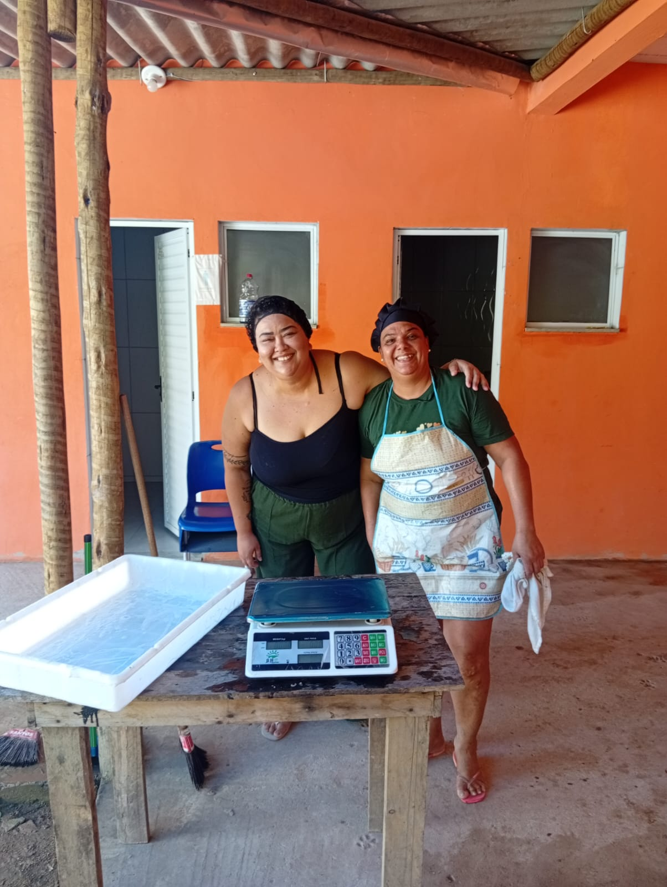
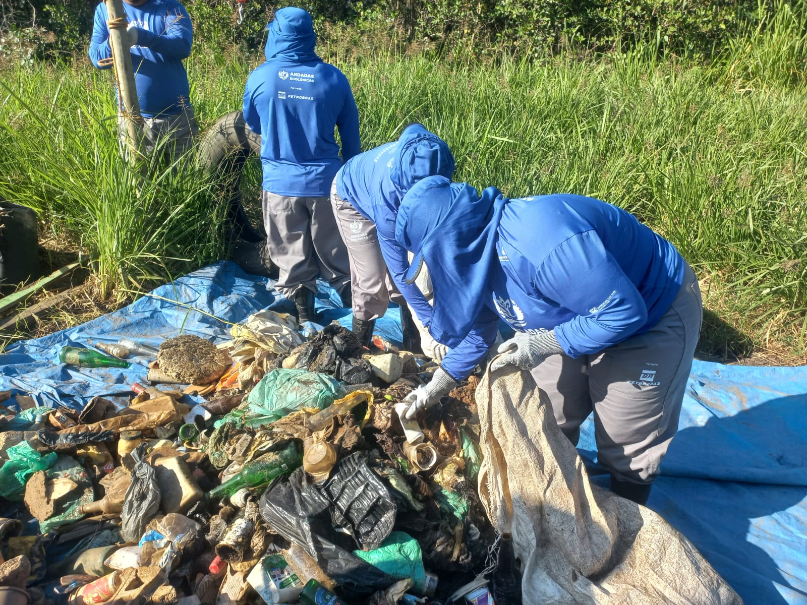
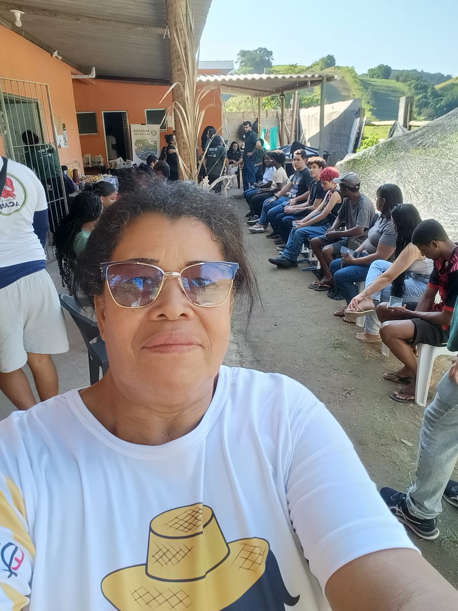
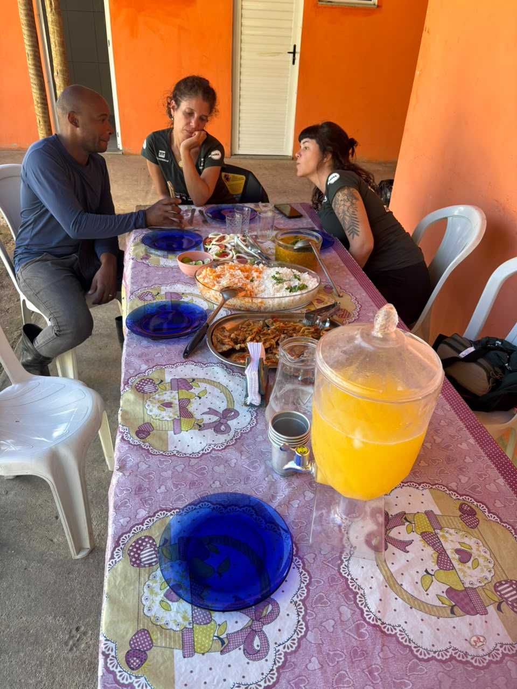
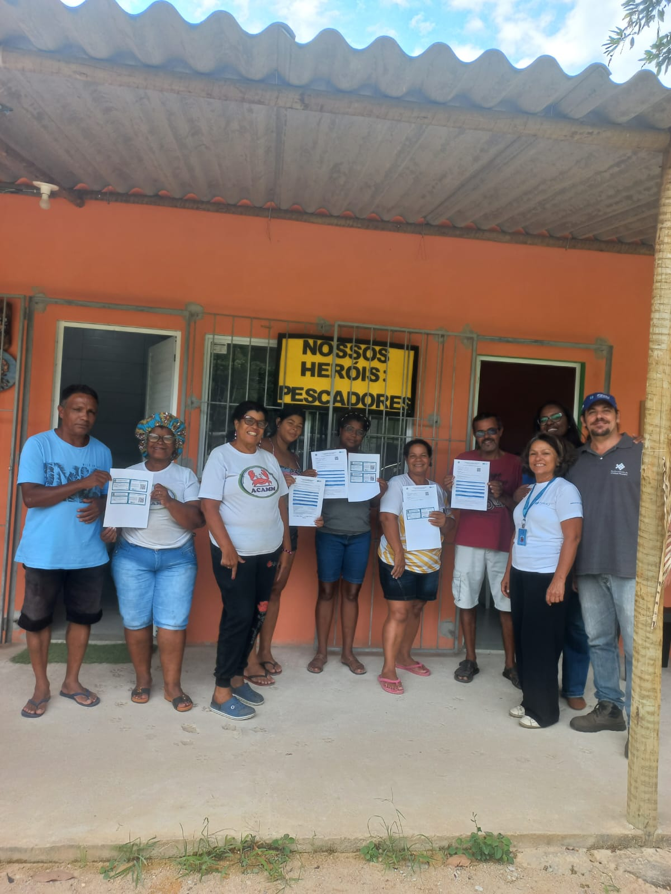
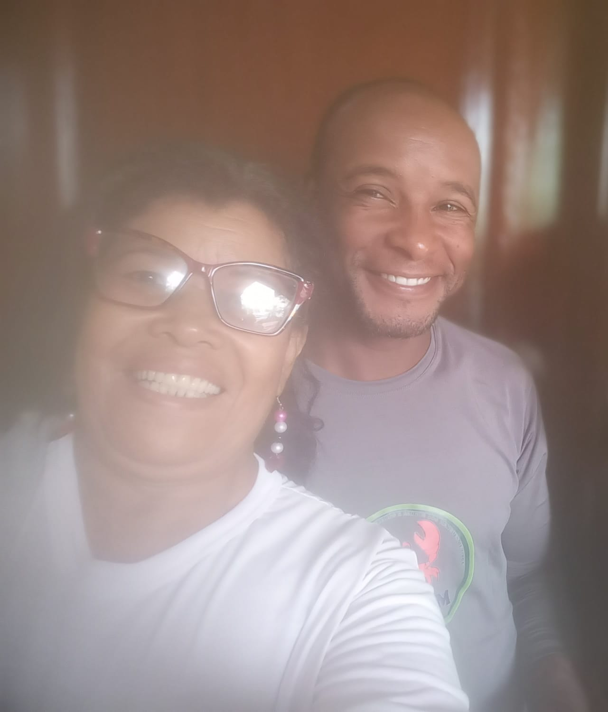

Economia Solidária
Mulheres da Pesca
Mulheres pescadoras beneficiando peixes e preparando receitas na cozinha comunitária.
Desde 2008 · Magé, Baía de Guanabara
A ACAMM une caranguejeiros, pescadoras e amigos do manguezal em torno de um mesmo propósito: preservar a Baía de Guanabara e garantir dignidade para quem vive da maré.
Nossa história
Tudo começou pela falta de reconhecimento. Hoje, a ACAMM é referência em organização comunitária, geração de renda e preservação ambiental na Baía de Guanabara.
A ACAMM nasce da demanda de catadores de caranguejo que não conseguiam reconhecimento como pescadores. O primeiro espaço de atendimento foi cedido no quintal e na varanda de dona Marlúcia, pescadora, esposa e mãe de caranguejeiros.
Um empreendimento de petróleo obriga a associação a deixar o local, sem ainda constar no processo de desapropriação. Sem sede fixa, os trabalhos seguem graças a moradores que cedem espaço, até ocupar salas junto ao Ministério da Pesca (MPA), ICMBio e Meio Ambiente de Magé.
Primeiro projeto Fumbio conquistado, com apoio de Jaqueline Correa e Jairo Correa Santos, seguido de um segundo projeto voltado à estruturação da entidade — ambos entregues com excelência.
No último edital Fumbio, a associação investe em algo transformador: uma cozinha comunitária para as mulheres da pesca, hoje fonte de renda complementar para mais de 15 famílias.
A ACAMM tem sede própria por lei no local onde nasceu, com salas, banheiro e cozinha em pleno funcionamento três dias por semana. Recebe universidades para turismo de base comunitária e implanta sua horta comunitária.
Nosso dia a dia
Um retrato do trabalho coletivo: da cozinha comunitária às parcerias que garantem direitos à categoria pesqueira.

Mulheres pescadoras beneficiando peixes e preparando receitas na cozinha comunitária.

Equipe da ACAMM em ação, tendo retirado mais de 100 toneladas de lixo dos mangues da Baía de Guanabara ao longo de 7 anos.

Reunião geral com os associados realizada na sede oficial da ACAMM.

Presidente Rafael dialogando em almoço de alinhamento com prestadores de serviço da Transpetro / Petrobras.

Pescadores recebendo a CAF (Cadastro Nacional da Agricultura Familiar), emitida pela FIPERJ — documento vital para a categoria.

O Presidente Rafael ao lado da Primeira Secretária Márcia Regina.
“Juntos pela preservação do manguezal e pelo sustento digno das famílias pescadoras da Baía de Guanabara.” ACAMM — Associação de Caranguejeiros e Amigos dos Mangues de Magé
Fale Conosco
Tire suas dúvidas ou junte-se à nossa associação diretamente pelo WhatsApp.
Iniciar Conversa